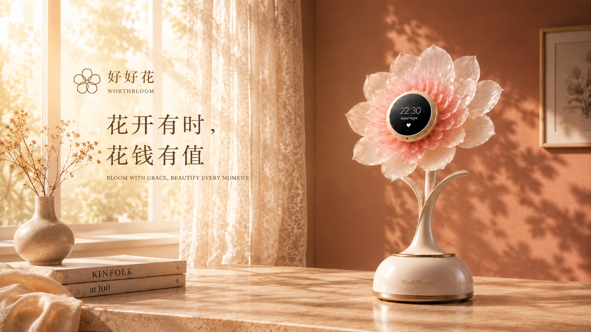
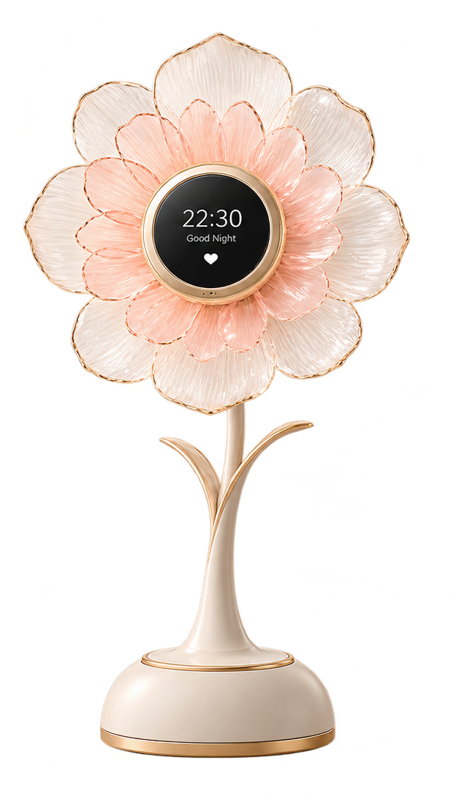
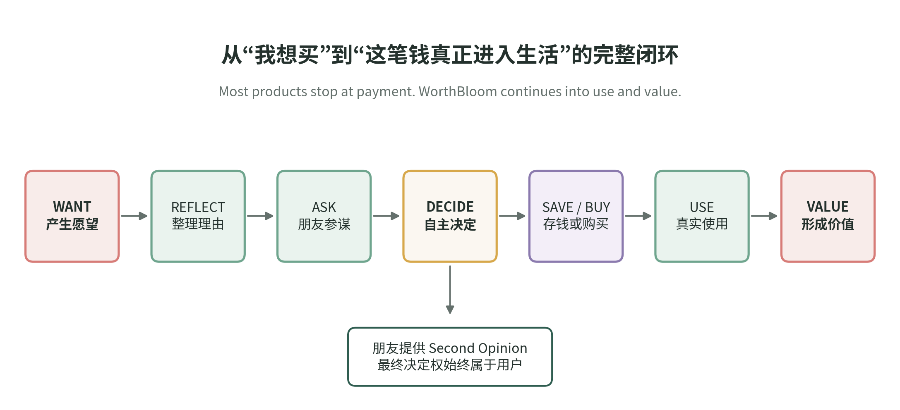
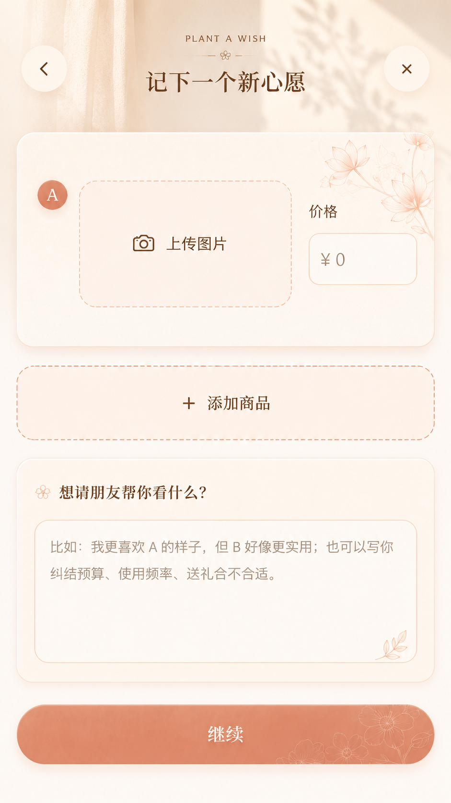
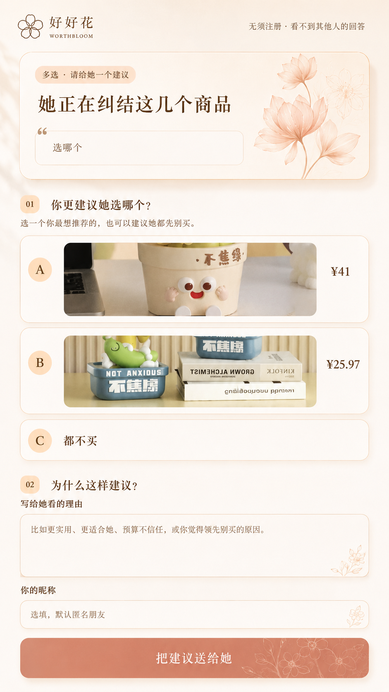
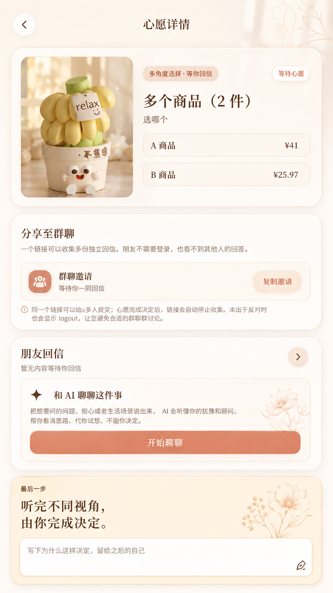
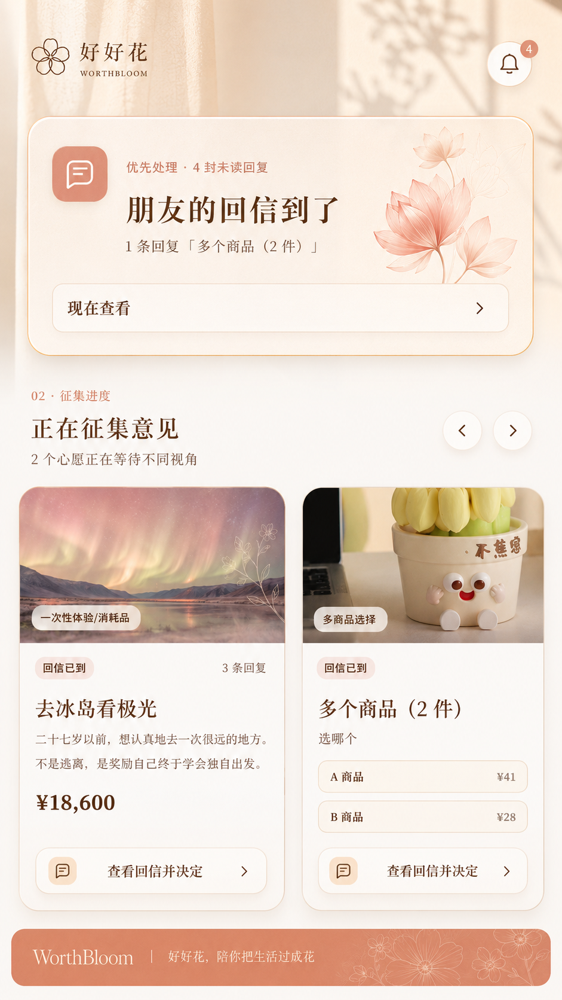
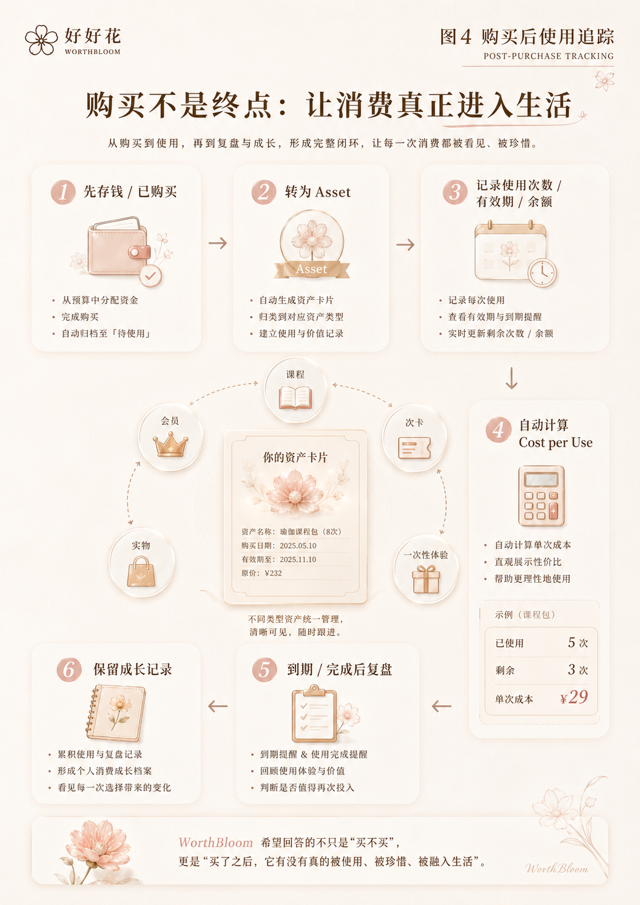
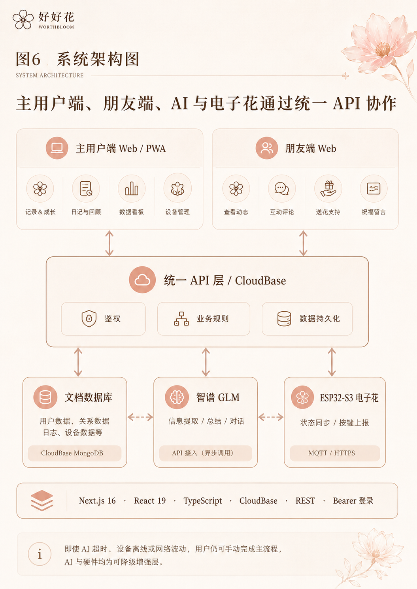
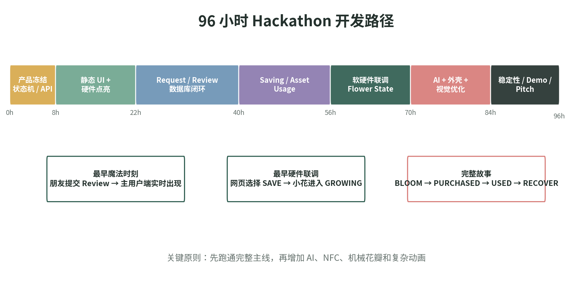

动机、预算、时间与坚持没有被系统整理；可信关系中的第二视角也常常缺席。
剩余次数、有效期、余额、使用频率与 Cost per Use 分散在生活里，难以持续回看。
WorthBloom 是一个由移动端 Web、AI 小秘书与桌面电子花组成的消费价值闭环系统。



一次性链接让朋友独立选择身份、判断章与理由；主用户看到原始意见、共识与分歧。



课程/次卡、会员、储值、实物与一次性体验被统一管理，持续记录真实使用。

1 积分 = 900 Token，用于 AI 对话、商品信息提取等模型调用额度。
ESP32-S3 读取压缩后的 Device State，通过圆屏、状态动画与预留舵机结构呈现进度；按键可上报使用事件。

即使 AI 超时、设备离线或网络波动，用户仍可手动完成主流程；设备不接触朋友昵称、留言和账户隐私。

先统一规则与演示数据，再验证回看是否提升使用完成率；随后完善硬件，并探索课程、会员与体验消费场景合作。
让想买的事先被想清楚， 再被真正用起来。
消费不是在付款时结束，而是在真实使用中开花。